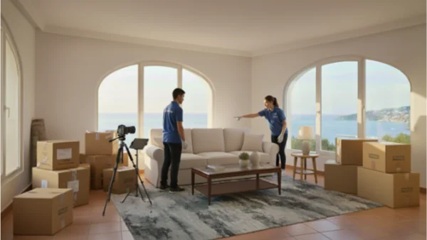
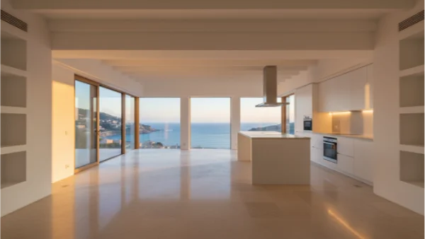

Sitges · Vallpineda · Garraf
Gestión confidencial a distancia. Sin que usted tenga que desplazarse.

Una solución tranquila
En el exclusivo entorno del Garraf, muchas propiedades pertenecen a ciudadanos europeos, nórdicos o británicos. Cuando surge una herencia, una venta urgente o un cambio de residencia, gestionar el vaciado de pisos desde otro país puede ser estresante, e incluso imposible.
Somos locales. Conocemos cada rincón de Sitges y el Garraf. Entendemos no solo las calles, sino las dinámicas sociales, las normas de convivencia y los protocolos no escritos de las urbanizaciones más exclusivas. Su propiedad está en manos de quien la conoce y la respeta.
Especializado para
Propietarios internacionales que gestionan desde el extranjero
Conocimiento privilegiado
Trabajamos con absoluto respeto a la privacidad y a las normativas de las urbanizaciones más exclusivas de Sitges y el Garraf.
Gestión coordinada con servicios de seguridad privada y administraciones. Trabajamos en horarios pactados para una total discreción en el vaciado de casas de lujo en urbanizaciones cerradas.
Conocemos los protocolos de acceso, permisos de carga y descarga y la logística particular de las propiedades con acceso directo o vistas al mar. Vaciado costero con la máxima discreción.
Experiencia en fincas rústicas y chalets con jardín, gestionando la retirada de mobiliario de exterior, herramientas y elementos de gran volumen con eficiencia y respeto.
Por qué nos eligen
Trabajamos habitualmente en inglés, francés y alemán. Enviamos informes fotográficos detallados y actualizaciones en tiempo real.
Nuestros vehículos no llevan ningún logotipo visible. No informamos a vecinos ni a porteros. Trabajamos en horarios acordados con la mayor confidencialidad.
Identificamos, documentamos y gestionamos antigüedades, arte, mobiliario de diseño, vajillas, joyas u otros bienes de valor. Le asesoramos sobre su destino.
Para nuestros clientes internacionales que gestionan una propiedad en España desde el extranjero, recomendamos Expat.com, plataforma de referencia para expatriados. Encontrará información práctica y una comunidad activa. Visitar nuestro perfil →
Sin complicaciones
Comprendemos su situación, sin compromiso. Análisis de su necesidad de vaciado de propiedades en España desde el extranjero.
Evaluamos el estado, el tipo de objetos y el acceso. Experiencia en vaciado de propiedades de lujo y gestión patrimonial.
Le enviamos un plan claro con opciones flexibles: vaciado completo, selección de objetos, subastas, donaciones, según su situación.
Sin ruido, sin logotipos, con informes diarios si lo desea. Discreta, eficiente y puntual en cada fase.
La propiedad queda lista para vender, alquilar o traspasar. El vaciado finalizado, el espacio sosegado y preparado.
Resultados reales
Entendemos que no son solo objetos, son historias y recuerdos. Nuestro equipo trabaja con la sensibilidad que estos momentos requieren.


Mi madre falleció en Sitges, pero yo vivo en Suecia. No podía viajar con frecuencia, y la casa estaba llena de objetos personales y muebles antiguos. Este equipo me guió paso a paso, me envió fotos de cada decisión y gestionó todo con una serenidad y respeto que no esperaba. Hoy la casa está vendida, y conservo solo lo que realmente importaba.
Sitges, 2024
Respuestas claras
Sí. La mayoría de nuestros clientes viven fuera del país. Podemos coordinar el vaciado completo, la catalogación de objetos y la entrega de llaves sin necesidad de que usted se desplace. Mantenemos comunicación constante por correo, teléfono o videollamada.
Nos adaptamos a los protocolos de cada comunidad. Accedemos únicamente en horarios autorizados, utilizamos vehículos sin rotulación y mantenemos una relación fluida con la seguridad privada y administraciones locales. La discreción es parte esencial de nuestro servicio.
Los clasificamos de forma manual y meticulosa. Antes de retirar cualquier elemento, enviamos fotografías y listados para su aprobación. Los documentos personales se entregan directamente al propietario o se destruyen de forma segura, según sus instrucciones.
Podemos encargarnos de identificarlos, clasificarlos y prepararlos para su recogida. Si necesita enviarlos a otro país o almacenarlos temporalmente, le asesoramos sobre las opciones más seguras en Sitges y Barcelona, y coordinamos la entrega con la empresa que usted elija.
Por supuesto. Estamos acostumbrados a trabajar con representantes legales, administradores de fincas y agencias inmobiliarias de Sitges y el Garraf. Podemos entregar llaves, firmar accesos y preparar la vivienda para venta o alquiler.
Emitimos factura detallada y aceptamos transferencias SEPA desde cualquier país europeo. No trabajamos con pagos en efectivo. La transparencia es absoluta en cada fase del proceso.